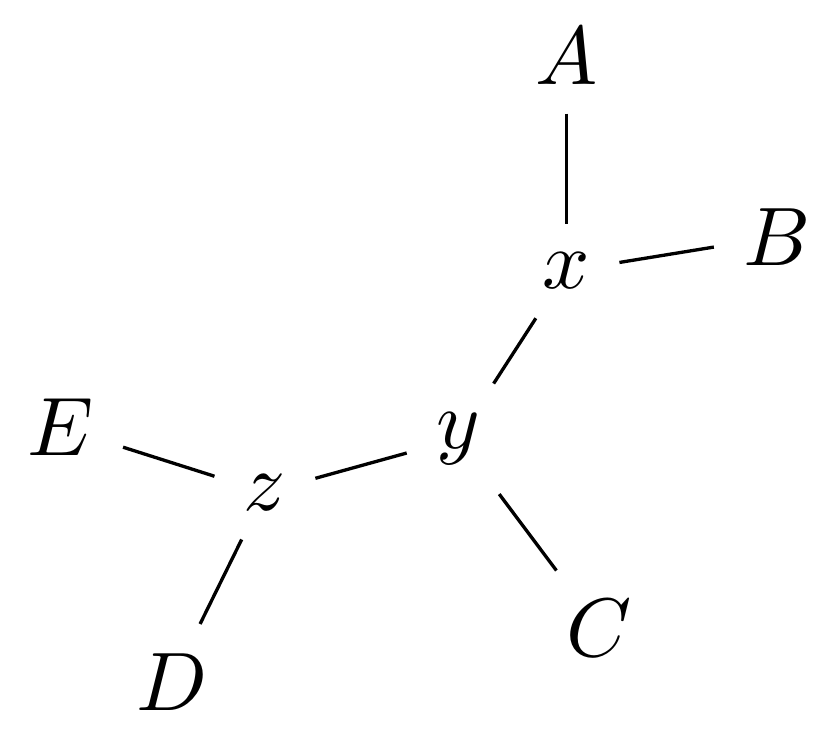
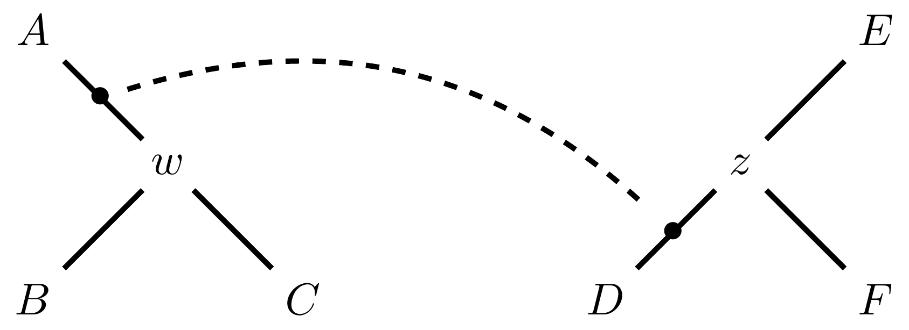

Phylogenetics - Back to Basics - Estimating trees from alignments
Contributors
Likelihood
A way to select models, given data
Why Likelihood?
- Statistical rigour! Likelihood requires a statistical model and gains scientific rigour to defend hypotheses made.
- Comparing hypotheses! We can compare models of evolution and determine which is better supported by the data.
- Accuracy! Likelihood is generally the most accurate method to estimate phylogenies.
Likelihood Definition
The likelihood of a model is a quantity that is proportional to the probability that the model gave you the data.
It is easy(ish) to calculate the probability that a given model yields a particular outcome – the data set.
Maximum Likelihood (ML) seeks to find the model for which this probability is the highest.
Dice example
Imagine I have a set of very strange 10-sided dice, where the sides of my .blue[blue] die are labelled (1,1,2,3,4,5,5,6,6,6), and the sides of the .red[red] die are labelled (1,1,2,2,3,3,4,4,5,6).
Both dice have the same range of possible outcomes, 1 through 6, but the relative probabilities are different.
| score | P.red[red] | P.blue[blue] |
|---|---|---|
| 1 | 0.2 | 0.2 |
| 2 | 0.1 | 0.2 |
| 3 | 0.1 | 0.2 |
| 4 | 0.1 | 0.2 |
| 5 | 0.2 | 0.1 |
| 6 | 0.3 | 0.1 |
| Total | 1.0 | 1.0 |
Dice example
Suppose I choose a die and roll it three times, getting values 3, 6, and 2.
Which die is most likely to have been used?
If it were the .blue[blue] die then the probability of this outcome is \(0.1\times 0.3 \times 0.1 = 0.003\).
If it were the .red[red] die then this probability is \(0.2\times 0.1 \times 0.2 = 0.004\).
Neither of these probabilities is high! But the larger of the two is for the .red[red] die: thus, given the data, we would say the maximum likelihood estimate of the “model” (here, which die was used) is the .red[red] die.
Slightly formal, with Bayes
We could write this example more formally as
-
Data \(D\) is the outcome \((3,6,2)\);
-
\(P(\color{blue}{B})\) and \(P(\color{red}{R})\) are the probabilities of choosing the blue and red dice (say 0.5 each);
-
\(P(D \color{blue}{B})\) and \(P(D \color{red}{R})\) are the probabilities of the data given the model “blue die” and “red die”; -
\(P(\color{blue}{B} D)\) is the probability of the model given the data, and it can be written
\(
P(\color{blue}{B}|D) = \frac{P(D|\color{blue}{B})P(\color{blue}{B})}{P(D)} = \frac{P(D|\color{blue}{B})P(\color{blue}{B})}{P(D|\color{blue}{B})P(\color{blue}{B})+P(D|\color{red}{R})P(\color{red}{R})}
\)
– this is Bayes’ formula.
-
Similarly we can write \(P(\color{red}{R} D)\) as
\(
P(\color{red}{R}|D) = \frac{P(D|\color{red}{R})P(\color{red}{R})}{P(D)} = \frac{P(D|\color{red}{R})P(\color{red}{R})}{P(D|\color{blue}{B})P(\color{blue}{B})+P(D|\color{red}{R})P(\color{red}{R})}
\)
- These conditional probabilities can be thought of as the relative likelihoods of the model, given the data.
Important Concepts learned
The dice example was very simple but it showed us important concepts:
- We could turn around the probability of the data given a model to the probability of a model, given the data;
- Of the models considered, it was possible to choose one that was more likely;
- These likelihoods can be really small, and don’t have to sum to 1 (so they’re not probabilities really).
Likelihood values in practice
In phylogenetics the probability of an alignment given a tree and its probabilities become really tiny so in order to avoid underflow numerical errors we use the natural log of the probabilities, and call it the log-likelihood.
Probability of a substitution
Now suppose we have a probability matrix whose entries are the probabilities of nucleotide substitution in some fixed time, say 1 million years:
.image-50[  ]
]
We could then calculate the probability of going from one nucleotide to another, say A to G, in 1M years by reading it from the graph:
\( Pr(A\to G) = P_{A,G} = 0.01. \)
Probability of sequences changing
To calculate the probability of multiple nucleotides changing we multiply the individual probabilities together – which is making direct use of the assumption that each nucleotide site evolves independently of the others.
We would then calculate the probability of going from sequence AAGT to AAGA as
Changing the time
To calculate the probability of sequences changing in our toy example for say two million years, we would square the probability matrix \(P\):
.image-50[  ]
]
Notice that the probability of going from A to G is not quite twice what it was before, since now there is a small chance that A will change to G and then back again.
So if we have a probability matrix for a fixed time period we can convert it to a probability matrix for multiples of that time.
Probabilities to Rates
This doesn’t generalise to arbitrary time periods, so instead we use a rate matrix, like this:
.image-50[  ]
]
Converting a rate matrix to a probability requires a matrix exponentiation, giving formulae like this:
\( P(t) = e^{Qt}. \)
We won’t worry here about technical details, but note that some classes of rate matrix are easier to work with than others, the easiest being the JC69 (one parameter) matrix.
Likelihood uses rate matrices
-
Many models of sequence evolution available, including different base (nucleotide) frequencies, and different sites being allowed different rates.
-
Likelihoods will be expressed as a (negative) log-likelihood, and these are used to compare models.
-
Typically these will be quite large (e.g., -37000, -80000), but it is the relative likelihoods that matter, so the difference between log likelihoods.
.blue[A model is selected to give the best chance of getting the phylogeny right.]
A huge range of models
-
More parameter-rich models fit better; we need to avoid over-fitting.
-
The (log)-likelihood value can be adjusted to penalise the model, based on the number of parameters.
-
Common penalties are the Akaike Information Criterion (AIC).
-
There is also a “corrected” AIC (AICc), and a “Bayesian Information Criterion” penalty (BIC).
Penalised likelihood
For a model with \(k\) free parameters and a log likelihood \(L\), here are the penalty functions:
AIC is the original information-theoretic correction:
\( AIC = 2k-2\ln(L)\)
AICc is a correction for small sample sizes and is equal to
\( AICc = AIC + \frac{2k^{2}+2k}{n-k-1} \)
BIC is defined by
\( BIC = k\ln(n) - 2\ln(L)\)
(where \(n\) is a measure of sample size).
All of these are in common use but the commonest is AIC, and that is the method we use in the tutorial.
Phylogenetic likelihood is mostly directionless
The likelihood calculations in this tutorial are based on reversible models: that means that there is no difference between the likelihood of going from sequence A to sequence B of from B to A.
This means that the output trees are unrooted.
(There are some asymmetric models included in IQTree but they are well beyond the scope of this tutorial and are not in common use.)
Likelihood of a tree and model
Now we have the huge task:
ML Search:
for every tree $T$ in tree space {
for each parameter in the substitution rate matrix {
for each branch length {
Calculate the (log-)likelihood of the alignment
}
}
}
… and find the best combination!
All this means that Maximum Likelihood is slow.
Likelihood under JC69
.image-50[  ]
]
.reduce-75[ where the asterisk is a short-hand to make the row-sums equal 0. ]
- This model has only one parameter.
- Note: we cannot separate this from the overall rate (just as you can’t tell people how “far” somewhere is by assuming how fast they’ll travel).
- Thus tree search is “only” over all trees and all branch lengths.
Likelihood under HKY85
.image-50[  ]
]
-
The HKY85 model has four parameters: \(\pi_{A}\), \(\pi_{G}\), \(\pi_{C}\) (and this fixes \(\pi_{T}\)), and a transition/ transversion rate ratio \(\kappa\).
-
Can fix \(\pi\) or estimate it from the observed frequencies, or even estimate it by searching for the best values (which means it takes longer of course).
GTR
The General Time Reversible model has nine parameters: three from the base frequencies and six more from the parameters in the substitution rate matrix:
.image-50[  ]
]
(The Greek letters are not standardised: they just show the structure.)
Rates across sites
-
Some sites are non-coding: they evolve faster than others.
-
Third codon position sites are largely redundant: for most amino acids, the third nucleotide is free to vary.
-
Some are under strong selection and evolve slowly.
-
Some are so important that they must stay in the same state else a protein will not fold properly: these are fixed.
This means that even if the same rate matrix might be applicable at different sites, the overall substitution rate might be hundreds of times faster at one site than another.
Models that accommodate this are called “Rates Across Sites” or RAS models.
.blue[By default, IQTree includes RAS models.]
Rates across sites

While the proportions of substitution types might be the same, the overall rate at these two sites can differ.
IQTree
.image-25[
 ]
]
IQTree is at the forefront of maximum likelihood phylogenetic tools. It is by far the most advanced such tool and is under active development, adding new models and features.
It is available from IQtree.org.
To cite IQTree2, please use
B.Q. Minh, H.A. Schmidt, O. Chernomor, D. Schrempf, M.D. Woodhams, A. von Haeseler, R. Lanfear (2020) IQ-TREE 2: New models and efficient methods for phylogenetic inference in the genomic era. Mol. Biol. Evol., 37:1530-1534. https://doi.org/10.1093/molbev/msaa015
Tree Space
A way to navigate among trees
—
What is “tree space”?
.left[ A network: ]
- whose nodes are trees, and
- whose edges are adjacencies between trees, where
- each node has some score or weight: here, it will be likelihood.
.left[ As we cannot check every tree we must wander through the set of trees in the hope of finding “good” ones, under the assumption that the best (most likely) trees will have a lot in common with each other.]
.left[ Fortunately this turns out to be the case! The best trees tend to clump together in tree space.]
Tree perturbations 1: NNI
Nearest Neighbour Interchange is a way to transform one tree into another – so we can search for the best tree.
An NNI move consists of effectively collapsing an internal branch of the tree and re-expanding it out in either of two possible ways.
For example, given the original tree
.image-25[  ]
there are two internal edges: \(x-y\) and \(y-z\). We can do an NNI move on each of them.
Tree perturbations 1: NNI

Select edge \(xy\) to collapse.
Tree perturbations 1: NNI

\(xy\) is collapsed.
Tree perturbations 1: NNI

Expand \(xy\) in either of two ways.
For an unrooted binary tree with \(n\) leaves, there are \(2(n-3)\) neighbouring trees under this move.
Simple example: five taxa

Tree perturbations 2: SPR
Subtree Pruning and Regrafting works by choosing an edge, cutting the tree at that edge, and then reconnecting the smaller part anywhere else in the larger part.

Tree perturbations 2: SPR

Trim the root of the subtree…
Tree perturbations 2: SPR

Regraft to \(y-D\),
Tree perturbations 2: SPR

… or \(y-z\),
Tree perturbations 2: SPR

… or \(z-E\),
Tree perturbations 2: SPR

… or \(z-F\).
Under this move there are more neighbours: \(4(n-3)(n-2)\) possible moves.
Tree perturbations 3: TBR
Tree Bisection and Reconnection works by cutting the tree at any internal edge, then re-rooting each of the parts just formed, and reconnecting the roots:

Tree perturbations 3: TBR
 —
—
Tree perturbations 3: TBR

Selecting edges as roots of the new subtrees
Tree perturbations 3: TBR

And reconnect!
Note: There is no neat form for the number of neighbours of a given tree under the SPR moves, but it’s more than TBR.

Painted Hills near Mitchell, Oregon.
This file is licensed under the Creative Commons Attribution-Share Alike 3.0 Unported license.
Hill Climbing
Tree Search algorithms work essentially by
-
Starting with a reasonably good estimate, e.g., using Neighbour-Joining;
-
Checking all the neighbouring trees under whichever perturbation is being used for an acceptable new tree;
-
If an acceptable new tree is available, move to it! If not, then stop.
- Most simply, “acceptable” means “better than this one”.
This kind of heuristic search is called hill climbing, from the obvious analogy.
- Most simply, “acceptable” means “better than this one”.

This figure from Cao et al. (2019) illustrates moving around in tree space.
Source: https://doi.org/10.1101/746362
Anolis phylogeny example
.pull-left[
 ]
.pull-right[
Anolis is a highly speciose genus of lizards – more than 425 species (unless as some would have it, many should be moved to another genus) – native to the Americas.
]
.pull-right[
Anolis is a highly speciose genus of lizards – more than 425 species (unless as some would have it, many should be moved to another genus) – native to the Americas.
.reduce50[ Graphic: “Picture of a lizard (Anolis carolinensis) I (DanielCD) took in Atascocita, Texas (USA) on 4/22/05. Atascocita is in southeast Texas just north of Houston.”
This file is licensed under the Creative Commons Attribution-Share Alike 3.0 Unported license. ] ] —
layout: true
iqtree output
.reduce70[
mac@mac-pc-443 ~/N/p/t/2/AusBioCommons-Phylogenetics> iqtree2 -s anolis-aligned.fasta
IQ-TREE multicore version 2.1.3 COVID-edition for Linux 64-bit built Apr 21 2021
Developed by Bui Quang Minh, James Barbetti, Nguyen Lam Tung,
Olga Chernomor, Heiko Schmidt, Dominik Schrempf, Michael Woodhams.
Host: mac-pc-443 (AVX2, FMA3, 31 GB RAM)
Command: iqtree2 -s anolis-trimmed-aligned-clustal.fasta -redo
Seed: 225340 (Using SPRNG - Scalable Parallel Random Number Generator)
Time: Thu Dec 21 13:26:51 2023
Kernel: AVX+FMA - 1 threads (8 CPU cores detected)
HINT: Use -nt option to specify number of threads because your CPU has 8 cores!
HINT: -nt AUTO will automatically determine the best number of threads to use.
Reading alignment file anolis-trimmed-aligned-clustal.fasta ... Fasta format detected
Alignment most likely contains DNA/RNA sequences
Alignment has 55 sequences with 1462 columns, 1138 distinct patterns
913 parsimony-informative, 172 singleton sites, 377 constant sites
Gap/Ambiguity Composition p-value
1 Anolis.acutus 3.56% passed 50.37%
2 A.aeneus 5.54% failed 2.25%
3 A.agassizi 3.01% failed 1.82%
4 A.ahli 3.15% passed 81.11%
5 A.aliniger 2.74% passed 43.47%
6 A.alutaceous 2.94% passed 9.34%
7 A.angusticeps 2.80% passed 57.88%
8 A.bahorucoensis 2.53% passed 21.76%
9 A.barahonae 3.90% failed 1.72%
10 A.bartschi 3.76% passed 30.22%
11 A.bimaculatus 4.65% passed 32.77%
] —
.reduce70[
Create initial parsimony tree by phylogenetic likelihood library (PLL)... 0.010 seconds
Perform fast likelihood tree search using GTR+I+G model...
Estimate model parameters (epsilon = 5.000)
Perform nearest neighbor interchange...
Estimate model parameters (epsilon = 1.000)
1. Initial log-likelihood: -37100.382
2. Current log-likelihood: -37098.639
Optimal log-likelihood: -37097.515
Rate parameters: A-C: 1.41395 A-G: 4.11730 A-T: 1.55773 C-G: 0.69506 C-T: 7.28507 G-T: 1.00000
Base frequencies: A: 0.339 C: 0.261 G: 0.118 T: 0.282
Proportion of invariable sites: 0.186
Gamma shape alpha: 0.832
Parameters optimization took 2 rounds (0.144 sec)
Time for fast ML tree search: 0.993 seconds
] —
.reduce70[
ModelFinder will test up to 286 DNA models (sample size: 1462) ...
No. Model -LnL df AIC AICc BIC
1 GTR+F 41407.688 115 83045.375 83065.197 83653.445
2 GTR+F+I 39252.694 116 78737.387 78757.569 79350.744
3 GTR+F+G4 37164.452 116 74560.904 74581.085 75174.261
4 GTR+F+I+G4 37096.959 117 74427.917 74448.462 75046.562
5 GTR+F+R2 37597.901 117 75429.802 75450.347 76048.447
6 GTR+F+R3 37179.249 119 74596.499 74617.780 75225.718
7 GTR+F+R4 37074.898 121 74391.795 74413.828 75031.590
8 GTR+F+R5 37037.210 123 74320.421 74343.219 74970.791
9 GTR+F+R6 37031.233 125 74312.465 74336.043 74973.410
21 SYM+R5 37262.481 120 74764.963 74786.618 75399.470
22 SYM+R6 37261.627 122 74767.254 74789.668 75412.336
34 TVM+F+R5 37097.645 122 74439.290 74461.704 75084.373
35 TVM+F+R6 37095.642 124 74439.285 74462.471 75094.942
47 TVMe+R5 37745.606 119 75729.213 75750.494 76358.432
48 TVMe+R6 37742.081 121 75726.162 75748.195 76365.957
60 TIM3+F+R5 37076.842 121 74395.685 74417.718 75035.480
61 TIM3+F+R6 37070.459 123 74386.918 74409.717 75037.288
73 TIM3e+R5 37747.554 118 75731.107 75752.019 76355.039
74 TIM3e+R6 37740.393 120 75720.786 75742.442 76355.293
86 TIM2+F+R5 37042.461 121 74326.921 74348.954 74966.716
87 TIM2+F+R6 37036.463 123 74318.927 74341.725 74969.297
99 TIM2e+R5 37274.306 118 74784.612 74805.524 75408.544
100 TIM2e+R6 37273.302 120 74786.604 74808.259 75421.111
112 TIM+F+R5 37081.068 121 74404.136 74426.169 75043.931
113 TIM+F+R6 37074.732 123 74395.464 74418.262 75045.834
125 TIMe+R5 37757.456 118 75750.913 75771.824 76374.845
126 TIMe+R6 37750.820 120 75741.641 75763.296 76376.148
138 TPM3u+F+R5 37129.051 120 74498.103 74519.758 75132.610
] —
.reduce70[
Estimate model parameters (epsilon = 0.100)
1. Initial log-likelihood: -37042.461
Optimal log-likelihood: -37042.422
Rate parameters: A-C: 1.77793 A-G: 5.08796 A-T: 1.77793 C-G: 1.00000 C-T: 8.61510 G-T: 1.00000
Base frequencies: A: 0.339 C: 0.261 G: 0.118 T: 0.282
Site proportion and rates: (0.321,0.030) (0.225,0.316) (0.232,1.114) (0.196,2.482) (0.026,6.784)
Parameters optimization took 1 rounds (0.163 sec)
Computing ML distances based on estimated model parameters...
Computing ML distances took 0.054833 sec (of wall-clock time) 0.054830 sec(of CPU time)
Computing RapidNJ tree took 0.000283 sec (of wall-clock time) 0.000282 sec (of CPU time)
Log-likelihood of RapidNJ tree: -37150.315
] —
.reduce70[
-------------------------------------------------------------------
| INITIALIZING CANDIDATE TREE SET |
--------------------------------------------------------------------
Generating 98 parsimony trees... 0.879 second
Computing log-likelihood of 98 initial trees ... 1.283 seconds
Current best score: -37042.422
Do NNI search on 20 best initial trees
Estimate model parameters (epsilon = 0.100)
BETTER TREE FOUND at iteration 1: -37042.003
Estimate model parameters (epsilon = 0.100)
BETTER TREE FOUND at iteration 2: -37036.294
Iteration 10 / LogL: -37042.212 / Time: 0h:0m:5s
Iteration 20 / LogL: -37058.987 / Time: 0h:0m:6s
Finish initializing candidate tree set (10)
Current best tree score: -37036.294 / CPU time: 6.458
Number of iterations: 20
]
.reduce70[
--------------------------------------------------------------------
| OPTIMIZING CANDIDATE TREE SET |
--------------------------------------------------------------------
Estimate model parameters (epsilon = 0.100)
BETTER TREE FOUND at iteration 27: -37036.066
Iteration 30 / LogL: -37044.404 / Time: 0h:0m:9s (0h:0m:31s left)
Iteration 40 / LogL: -37036.365 / Time: 0h:0m:11s (0h:0m:26s left)
Iteration 50 / LogL: -37036.142 / Time: 0h:0m:14s (0h:0m:22s left)
Iteration 60 / LogL: -37038.691 / Time: 0h:0m:16s (0h:0m:19s left)
Iteration 70 / LogL: -37039.589 / Time: 0h:0m:19s (0h:0m:15s left)
Iteration 80 / LogL: -37049.077 / Time: 0h:0m:21s (0h:0m:12s left)
Iteration 90 / LogL: -37036.399 / Time: 0h:0m:23s (0h:0m:9s left)
Iteration 100 / LogL: -37036.108 / Time: 0h:0m:26s (0h:0m:7s left)
Iteration 110 / LogL: -37036.508 / Time: 0h:0m:28s (0h:0m:4s left)
Iteration 120 / LogL: -37036.242 / Time: 0h:0m:31s (0h:0m:1s left)
TREE SEARCH COMPLETED AFTER 128 ITERATIONS / Time: 0h:0m:33s
]
.reduce70[
--------------------------------------------------------------------
| FINALIZING TREE SEARCH |
--------------------------------------------------------------------
Performs final model parameters optimization
Estimate model parameters (epsilon = 0.010)
1. Initial log-likelihood: -37036.066
Optimal log-likelihood: -37036.065
Rate parameters: A-C: 1.78140 A-G: 5.12638 A-T: 1.78140 C-G: 1.00000 C-T: 8.65177 G-T: 1.00000
Base frequencies: A: 0.339 C: 0.261 G: 0.118 T: 0.282
Site proportion and rates: (0.320,0.029) (0.222,0.311) (0.230,1.085) (0.200,2.454) (0.027,6.674)
Parameters optimization took 1 rounds (0.074 sec)
BEST SCORE FOUND : -37036.065
Total tree length: 10.598
Total number of iterations: 128
CPU time used for tree search: 32.804 sec (0h:0m:32s)
Wall-clock time used for tree search: 33.018 sec (0h:0m:33s)
Total CPU time used: 33.400 sec (0h:0m:33s)
Total wall-clock time used: 33.500 sec (0h:0m:33s)
Analysis results written to:
IQ-TREE report: anolis-aligned.fasta.iqtree
Maximum-likelihood tree: anolis-aligned.fasta.treefile
Likelihood distances: anolis-aligned.fasta.mldist
Screen log file: anolis-aligned.fasta.log
Date and Time: Thu Dec 21 13:28:52 2023
]
.image-100[

]
layout: false
Beyond Maximum Likelihood Trees
- Bayesian analyses with BEAST and MrBayes
- Networks – next video!
layout: false
Thank you!
.center[Next - phylogenetic networks!]
Thank you!
This material is the result of a collaborative work. Thanks to the Galaxy Training Network and all the contributors! Tutorial Content is licensed under
Creative Commons Attribution 4.0 International License.
Tutorial Content is licensed under
Creative Commons Attribution 4.0 International License.